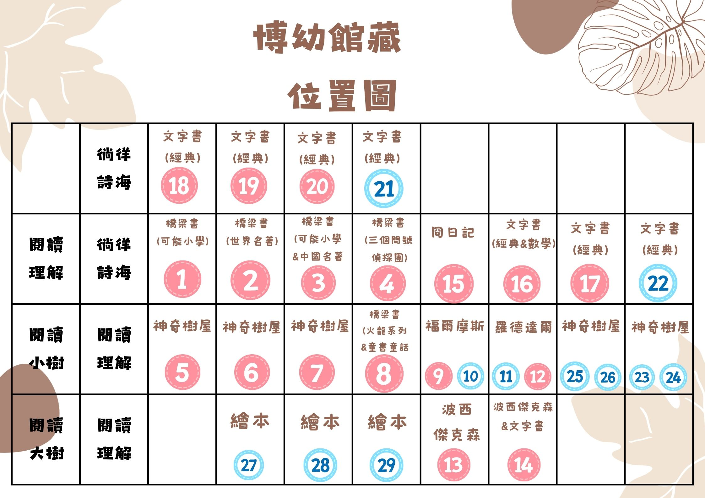

博幼圖書館管理系統
訪客
登入
登出
全部類別
繪本 (A)
橋梁書 (B)
文字書 (C)
繪本 (A)
橋梁書 (B)
文字書 (C)
按書名排序
按書碼排序
按年份排序
按類別排序
升冪
降冪
博幼藏書
位置圖
身分審核
借閱者清單
借閱者上傳
刪除身分
系統設定
Google Sheets 同步
從 Google Sheets 載入
重新整理書單
匯入 Excel 書單
新增館藏
一鍵搜尋封面
重新載入資料
自動更新
重置資料
0
總館藏
0
不重複書名
0
可借閱
0
已借出
最後更新：從未更新
自動更新已啟動
館藏列表
系列書
單本書
借閱記錄
匯出 Excel
返回首頁
搜尋
清除
快速借閱
借閱
全部狀態
借閱中
已歸還
逾期未還
借閱日期 (新到舊)
借閱日期 (舊到新)
書名 (A-Z)
借閱者 (A-Z)
書碼
逾期書籍
借閱統計
總計: 0 本
逾期: 0 本
管理功能
×
登入系統
使用者名稱：
請輸入您的使用者名稱，系統將自動識別您的身份
登入
×
博幼館藏位置圖

×
新增館藏
類別：
A（繪本）
B（橋梁書）
C（文字書）
選擇類別後會自動生成下一個可用書碼
書碼：
書碼首字母決定類別：A=繪本, B=橋梁書, C=文字書
書名：
套書：
如果這本書屬於某個套書，請填寫套書名稱
作者：
封面網址：
出版年份：
冊數：
同一本書的複本數量
取消
自動搜尋
新增書籍
×
編輯書籍
書碼：
書碼格式：A/B/C + 數字（例：C0001）。修改書碼會更新所有相關借閱紀錄。
書名：
搜尋
套書：
如果這本書屬於某個套書，請填寫套書名稱
作者：
封面網址：
出版年份：
冊數：
冊數不得小於目前已借出的數量。
取消
自動搜尋
儲存變更
×
系統設定
基本設定
使用者借閱時間
副管理者管理
預設借閱天數：
新使用者的預設借閱天數
訪客可借閱：
預設冊數：
預設年份：
儲存設定
使用者借閱時間設定
新增使用者設定
搜尋
副管理者管理
新增副管理者
×
設定使用者借閱時間
使用者名稱：
借閱天數：
備註原因：
儲存
刪除
×
新增副管理者
副管理者名稱：
副管理者可以新增、編輯書籍並上傳到 Google Sheet
新增